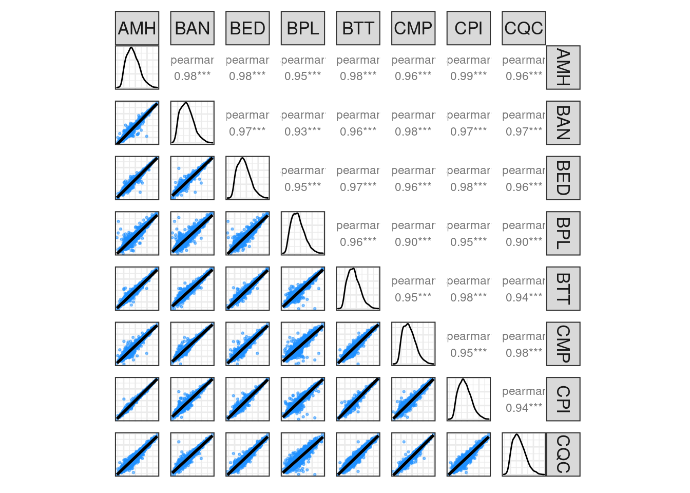

7 Strains expression comparison
7.1 Scatterplots
Initially, we can look at the scatterplots of intensities all-versus-all samples.
# scatterplots between strains
scmat_strains=draw_scatterplots(datain=int_filt_strains)
print(scmat_strains)
7.2 Heatmap Correlation
We then compute spearman rank correlations of intensities between all samples.
# heatmap correlation
cs_strains=compute_samples_correlation(int_filt_strains)
#> Compute pairwise samples correlation (Spearman)...
#>
#> Correlation method: 'spearman'
#> Missing treated using: 'pairwise.complete'
COR_RANGE = range( cs_strains[row(cs_strains) == (col(cs_strains) - 1)] )
hm_strains=draw_heatmap_samples(mcor = cs_strains,df.group=c(),col.group = col.group)The heatmap correlations show the high correlation of expression between strains: [0.942 - 0.977]